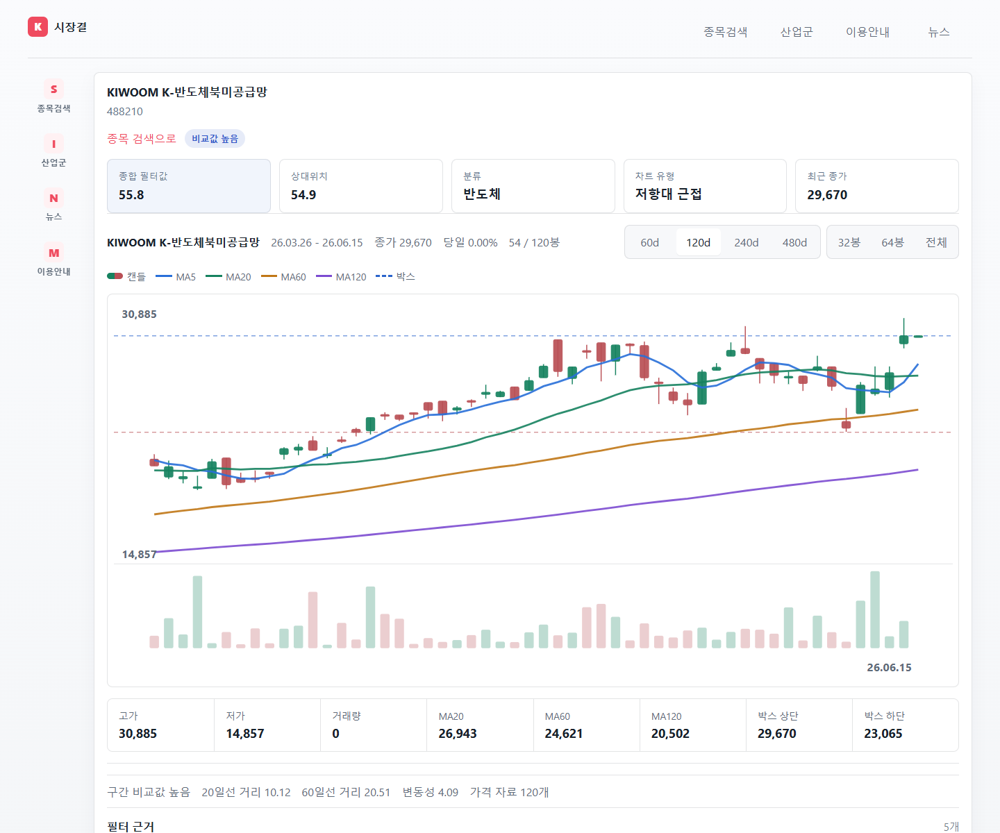
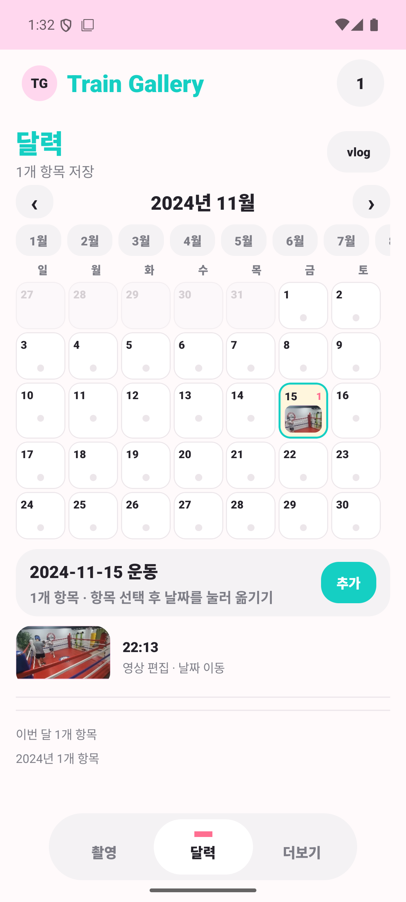
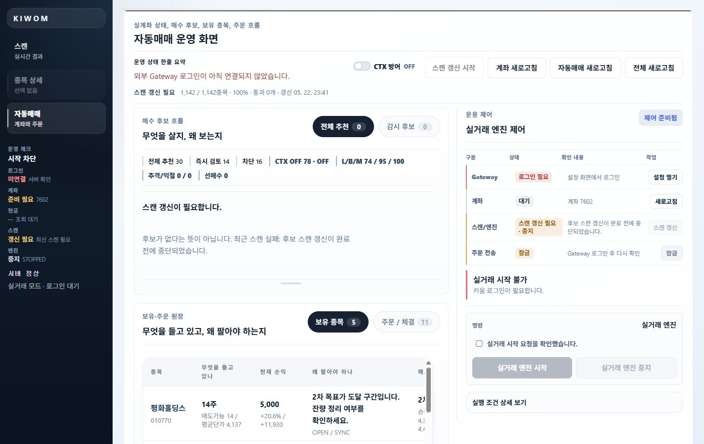
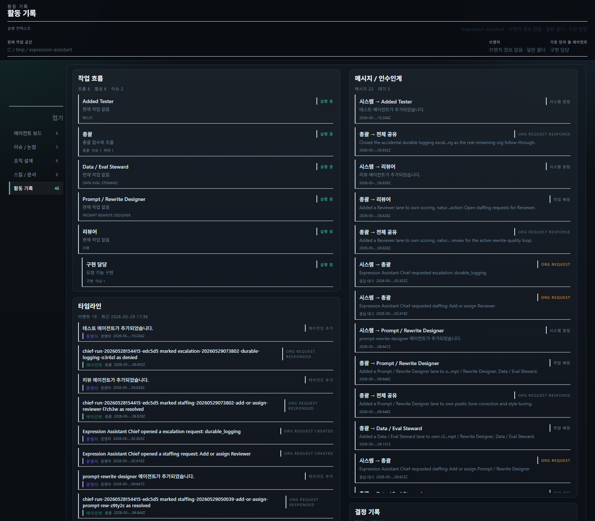
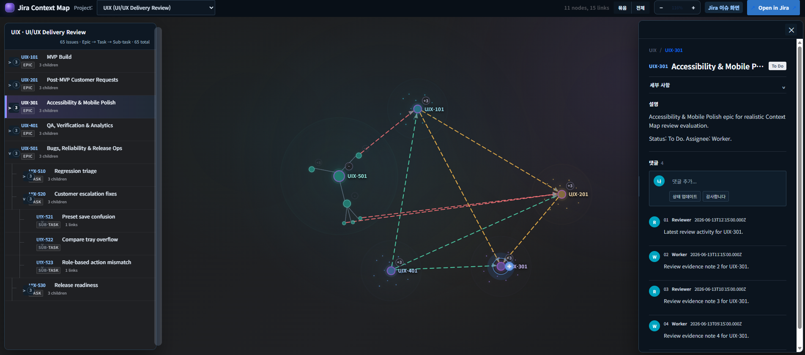

MOBASE ASEC
아키텍처 설계실 · R&D · 책임연구원
진행 프로젝트
- 오토사 기반 자동 코드 생성 툴 프로그램
- 업무 대시보드 설계 및 배포
업무 관련 자격사항
- 파이썬 기반 툴 개발 능력
- WSL·GCC 기반 단위·유닛 검증 능력 및 자동 테스트 환경 설계·구현 능력
- AUTOSAR ARXML 분석 및 코드 설계 능력

안녕하세요.
아키텍처 설계실 · R&D · 책임연구원
전장 SW 설계팀 · 연구원
회로2팀 소프트웨어 담당 · 사원 2년차


브라우저에서 C 코드 실행과 GPIO·register·graph·log 변화를 연결해 보는 학습 도구입니다.




Task·Sub-task·Epic 전체를 왼쪽 트리에서 탐색하고, 가운데 관계 맵에서 이슈 연결을 묶거나 풀어 보며, 오른쪽 상세 패널에서 선택한 이슈의 내용을 확인하는 Jira 작업공간입니다.